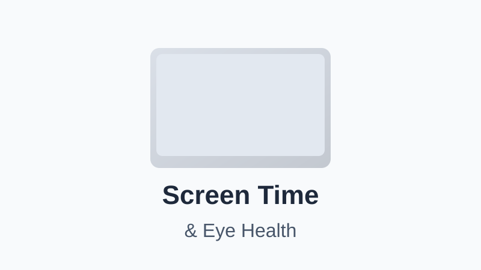

How Screen Time Affects Your Eyes — and What You Can Actually Do About It
Written by Sarah Mitchell
Health & Wellness Writer • Published: April 9, 2026 • 7 min read
The average American adult now spends more than 7 hours per day looking at screens — and that number rises to over 9 hours for teenagers, according to data from Nielsen and Common Sense Media. That's more waking hours staring at a display than nearly any other activity. So what's it doing to our eyes?
The short answer: screens cause real, measurable eye strain — but probably not the kind of permanent damage many people fear. Here's what the evidence actually shows.
Digital Eye Strain: What It Is
The American Optometric Association uses the term Computer Vision Syndrome (CVS) to describe a cluster of eye and vision symptoms that result from prolonged screen use. According to the AOA, an estimated 50-90% of people who work at a computer screen experience some symptoms of CVS.
Common symptoms include:
- Eye strain and fatigue
- Dry, irritated, or red eyes
- Blurred or double vision
- Headaches (especially behind the eyes)
- Neck, shoulder, and upper back pain
- Difficulty focusing after looking up from a screen
These symptoms are real but generally temporary — they typically resolve with rest and do not indicate permanent eye damage in adults.
The Blue Light Question
You've probably seen ads for "blue light blocking glasses" promising to protect your eyes and improve sleep. The reality is more complicated.
On eye strain: A 2021 randomized controlled trial published in Ophthalmic and Physiological Optics found that blue-light-filtering lenses did not reduce eyestrain symptoms compared to clear lenses in office workers (Wilkins et al., 2021). The American Academy of Ophthalmology does not recommend blue-light-blocking glasses for preventing digital eye strain, noting that the discomfort is more likely caused by focusing fatigue than by the light wavelength itself.
On sleep: This is where blue light has stronger evidence. Blue-wavelength light suppresses melatonin production more effectively than other wavelengths, which can delay sleep onset when screens are used close to bedtime. A study in the Proceedings of the National Academy of Sciences found that reading on an e-reader before bed delayed the circadian clock by about 1.5 hours compared to reading a print book (Chang et al., 2015).
The Myopia (Nearsightedness) Concern
This is perhaps the most significant long-term concern — particularly for children. Myopia rates have roughly doubled in the U.S. over the past 50 years, and research increasingly points to two factors: too much near work and too little time outdoors.
A landmark review in The Lancet found that children who spent more time outdoors had significantly lower rates of myopia onset, likely due to the role of bright outdoor light in regulating eye growth. The relationship between screen time specifically and myopia is still debated — outdoor exposure may be a more significant protective factor than reducing screen time alone.
For adults, excessive screen use can worsen existing myopia and accelerate the need for stronger prescriptions.
The 20-20-20 Rule and Other Evidence-Based Strategies
The 20-20-20 rule is widely recommended by eye doctors and has a strong rationale: every 20 minutes, look at something 20 feet away for at least 20 seconds. This gives the ciliary muscles that control focus time to relax, reducing accommodation fatigue.
Additional strategies supported by research and clinical guidance:
- Blink consciously: We blink about 15-20 times per minute normally, but this drops to 5-7 times per minute during screen use. Deliberate blinking keeps eyes lubricated
- Adjust display settings: Increase text size, reduce brightness to match ambient light, and use "night mode" in the evening
- Optimize your setup: Position your screen about arm's length away (20-28 inches) and slightly below eye level. Reduce glare by angling the screen away from windows or using matte screen protectors
- Use artificial tears: Over-the-counter lubricating eye drops can relieve dryness. Avoid drops with vasoconstrictors (redness-relieving drops) for daily use
- Take outdoor breaks: Spending 30-60 minutes outdoors daily provides bright light exposure that may benefit both eye health and circadian rhythm
- Screen-free buffer before bed: Avoid bright screens for 30-60 minutes before sleep, or use night mode / warm-toned lighting in the evening
When to See an Eye Doctor
Annual comprehensive eye exams are recommended for most adults. See an eye doctor sooner if you experience:
- Persistent blurred vision that doesn't resolve with rest
- Sudden changes in vision
- Eye pain that isn't relieved by rest
- Floaters, flashes of light, or a "curtain" over your vision (seek immediate care)
Disclaimer: This article is for informational purposes only. It does not replace professional eye care. If you have concerns about your vision or eye health, schedule an exam with a licensed optometrist or ophthalmologist.
Sarah Mitchell
Sarah is a health and wellness writer focused on making scientific research accessible to everyday readers.